Imagens
- JPG
- PNG
- WebP
- HEIC
- AVIF
- TIFF
- BMP
- GIF
- ICO
Foto do iPhone em HEIC vira JPG num gesto. SVG vira PNG, JPG ou PDF.
Segure Shift enquanto arrasta um arquivo e uma roda de formatos aparece em volta do ponteiro. Solte no formato que quiser: a cópia convertida fica ao lado do original.
A roda aparece onde está o ponteiro e mostra só o que faz sentido para aquele arquivo. Com o Shift já apertado, aperte ou solte Alt e Ctrl para trocar de roda sem largar o arquivo.
Soltar no miolo ou fora da roda cancela. Soltar o Shift faz a roda sumir e o arraste segue normal. Funciona em qualquer arraste de arquivos: no Explorer, na área de trabalho e nos diálogos de arquivo do Windows; no Arquivos (Nautilus) e na área de trabalho do GNOME.
Imagem, vídeo, áudio, PDF, documentos do Office, e-books, legendas e compactados. Com vários arquivos no arraste, todos são processados de uma vez.
Foto do iPhone em HEIC vira JPG num gesto. SVG vira PNG, JPG ou PDF.
MKV sem recodificar e GIF animado. Também tira o áudio em MP3, M4A ou WAV.
E mais: normalizar o volume, mono, tirar silêncio e juntar vários.
Uma imagem por página. Comprimir, dividir, girar, juntar e escolher páginas por miniatura.
Usa o Microsoft Office que você já tem, o LibreOffice ou, sem nenhum dos dois, pandoc + typst.
Um .md vira PDF ou DOCX; um EPUB vira PDF, texto ou HTML.
De um formato para o outro, mantendo os tempos.
Extrair, trocar o formato ou compactar uma pasta solta.
Traços, textos e fundos pautados, com o PDF original ainda vetorial por baixo. Não precisa do Xournal++ instalado.
A roda só mostra o que os programas instalados conseguem fazer. O instalador do Windows já traz os conversores; no Linux, instale os que quiser e a roda se adapta.
As ferramentas do topo da roda abrem uma janela na hora, com prévia ao vivo. Enter ou Ctrl+S salva, Esc cancela, e o trabalho segue em segundo plano.
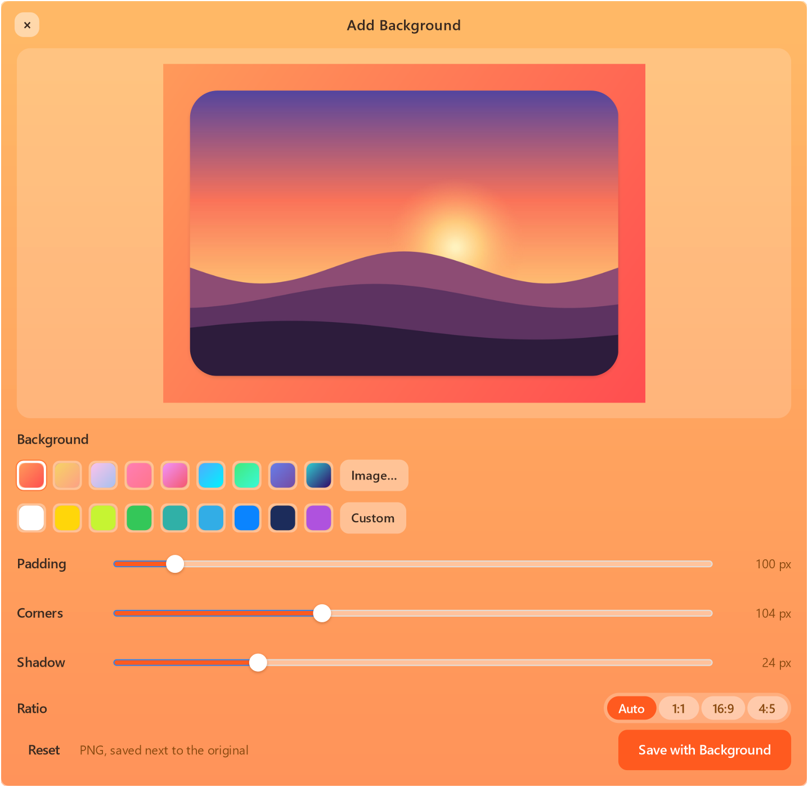
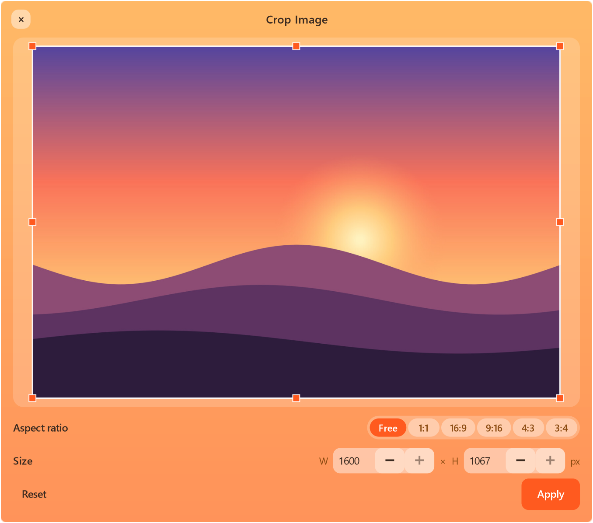
Girar, espelhar, brilho, contraste, saturação, preto e branco, escala e qualidade.
Pelo lado maior, por % ou por peso máximo, mostrando o tamanho final antes de salvar.
Tira de quadros ou forma de onda, com corte rápido sem recodificar.
Vídeos em 8, 10, 25, 50 ou 100 MB, ou o tamanho que você pedir.
Se o nome já existe, o novo vira foto (2).jpg.
Grava num arquivo temporário oculto e só dá o nome final quando termina.
Com os botões Mostrar na pasta e Abrir.
Nenhum arquivo sai do seu computador. Funciona sem internet.
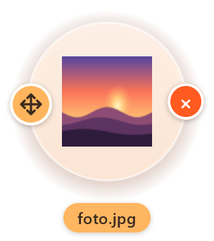
A ação Flutuar guarda os arquivos numa bolha sempre visível, com o mesmo ícone que o seu computador mostra. Depois é só arrastar para um e-mail, um chat, outra pasta ou um site.
Cinco estilos, três tamanhos de roda e quais itens aparecem em cada uma. As Configurações abrem pelo menu Iniciar ou pelo ícone da Mexerica perto do relógio (no GNOME, na barra superior).
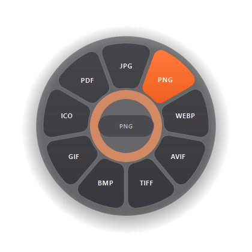
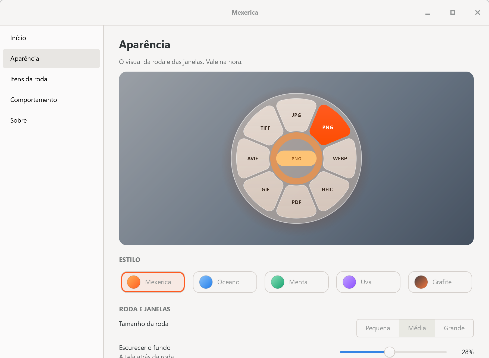
A instalação é por usuário e não mexe no resto do sistema. Para desinstalar, há um script ao lado do instalador.
No PowerShell ou no Terminal, como usuário comum:
git clone https://github.com/rogersocruz/mexerica
cd mexerica
.\install.cmd -Converters.\install.cmd -Converters na pasta.GNOME Shell 45 a 51 em Wayland. No Arch Linux:
# obrigatório
sudo pacman -S --needed python-gobject gtk4
# conversores: instale os que quiser
sudo pacman -S --needed ffmpeg imagemagick pandoc-cli
git clone https://github.com/rogersocruz/mexerica
cd mexerica
./install.sh~/.local, sem sudo, com a extensão do GNOME Shell. Depois, saia e entre de novo na sessão.A Mexerica é gratuita e de código aberto. A wiki explica cada operação, as configurações e o que fazer se algo não aparecer na roda.